Создание экранов в Grafana
Экраны мониторинга строятся в той же Grafana, где работает конфигуратор.
Данные тегов Grafana получает от платформы запросом
GET /v1/data/ (см. Исторические данные) через плагин источника
данных JSON API. Ниже по шагам построен тренд одного тега.
Подготовка
Установите и запустите платформу (Установка и запуск).
Соберите модель: тег, привязанный к хранилищу, в котором уже есть история. Как это сделать, показано в базовом курсе.
Откройте
https://<адрес из PRS_IP>/grafanaи войдите (при первом входе —admin/admin).
Источник данных
Плагин JSON API и источник данных peresvet на его основе создаются при
установке платформы. Источник peresvet выбран источником по умолчанию,
его адрес — http://<имя сервера>/v1/.
Проверьте источник: откройте меню Grafana, раздел Connections → Data sources → peresvet, и нажмите Save & test.
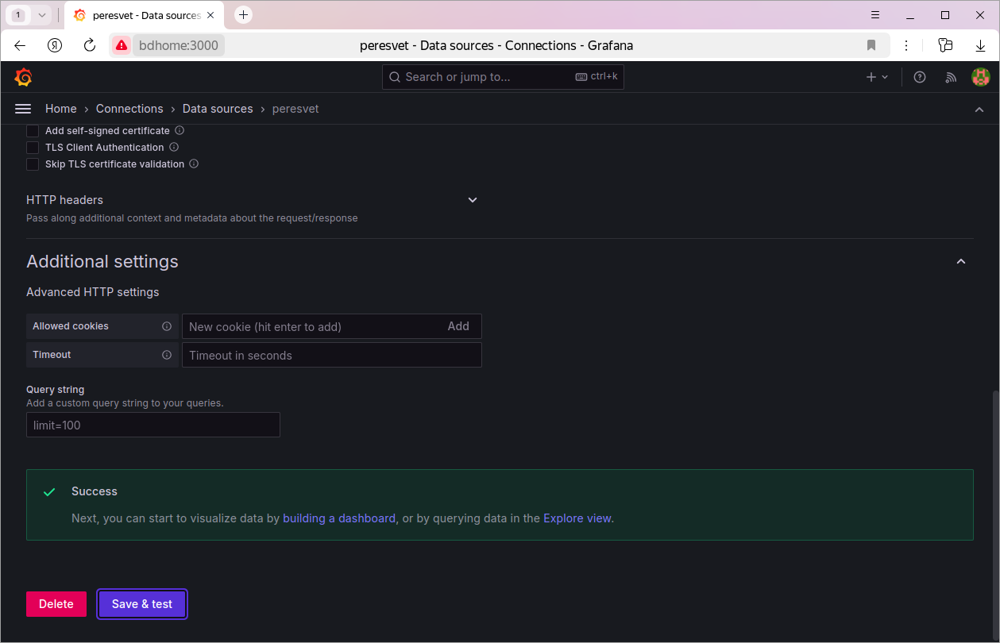
Если проверка не проходит, поправьте адрес в поле URL: укажите
https://<адрес сервера>/v1/, а для самоподписанного сертификата
включите в настройках TLS пропуск проверки сертификата.
Второй источник, например для другого сервера платформы, создаётся так же: Connections → Add new connection → JSON API → Add new data source. Имя источника может быть любым, в URL укажите адрес API платформы.
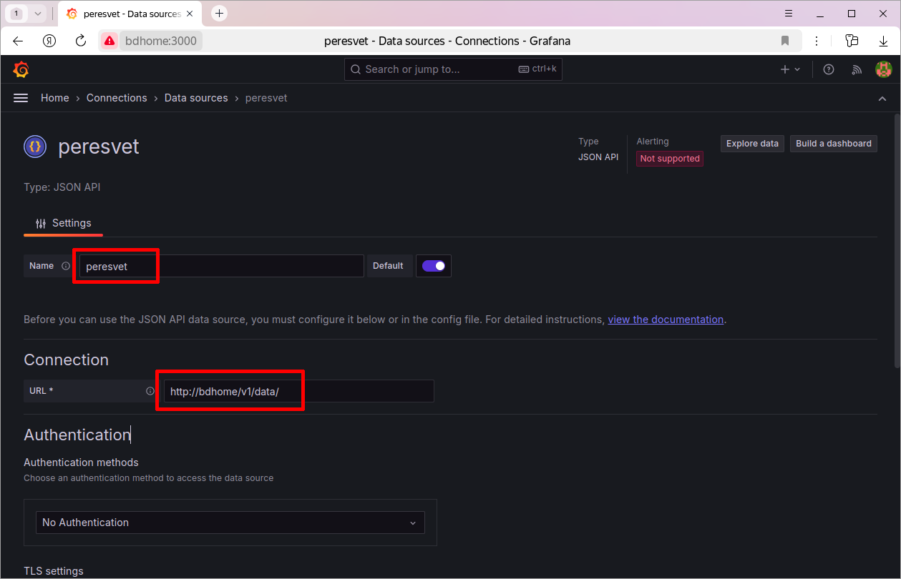
Тренд тега
Пусть в модели есть тег с идентификатором
58993cd8-f3e9-103e-97a9-c54148266c5f, и в хранилище есть его история.
Создайте новый экран (dashboard) и на нём новую панель (visualization):
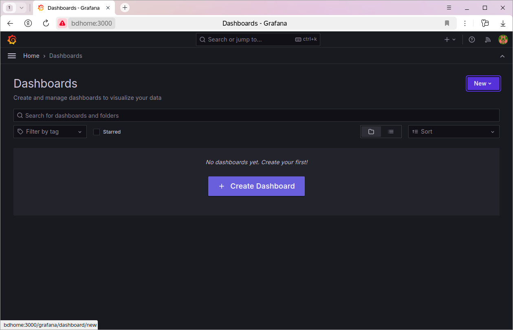
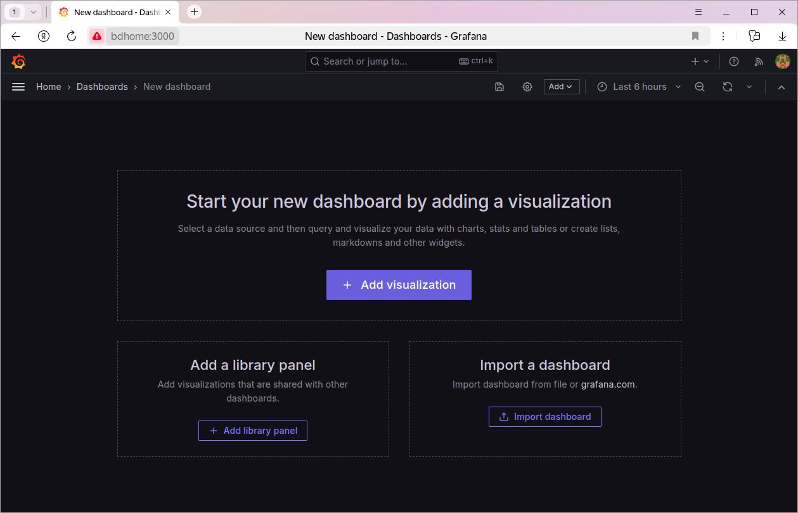
Выберите источник данных
peresvet: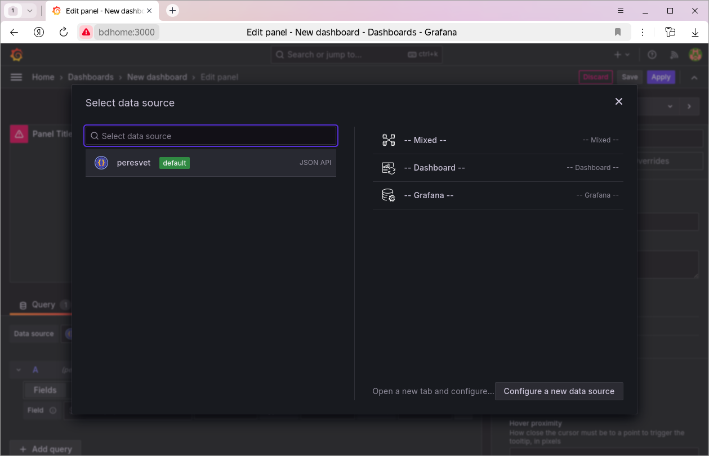
Откроется редактор панели. Тип панели — Time series:
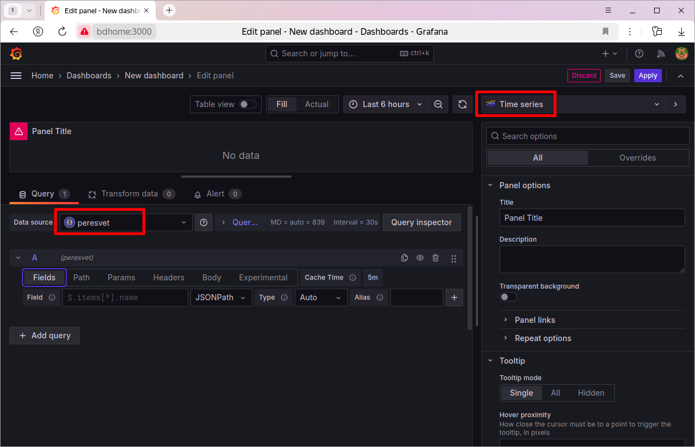
На вкладке Path запроса укажите путь к API данных относительно адреса источника. Для источника
peresvetс адресом.../v1/этоdata/: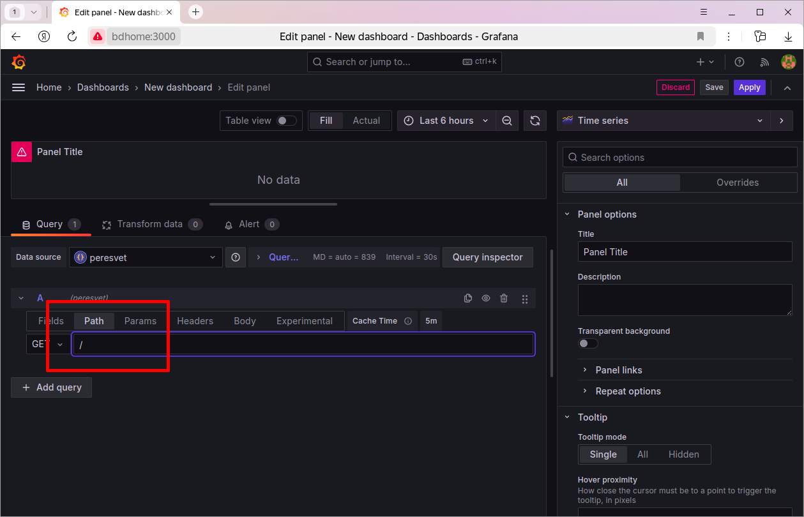
На вкладке Params добавьте параметр запроса
qсо значением:{"tagId":"58993cd8-f3e9-103e-97a9-c54148266c5f","format":true,"start":"$__isoFrom()","finish":"$__isoTo()"}
$__isoFrom()и$__isoTo()— функции Grafana. Они подставляют начало и конец периода, выбранного на экране, в формате ISO 8601. Остальные ключи запроса описаны в разделе Исторические данные.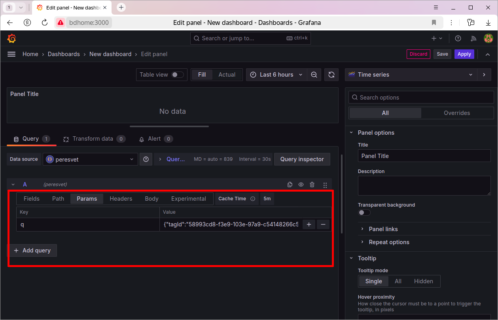
Проверьте, что платформа отвечает: нажмите Query inspector, затем Refresh. В ответе должен быть массив точек тега:
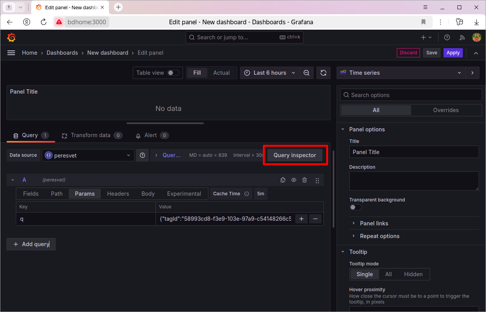
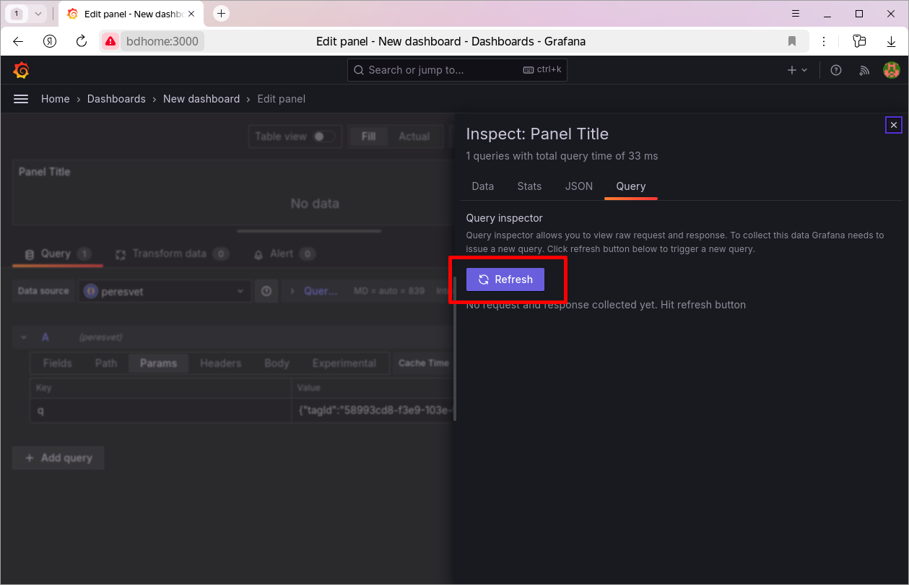
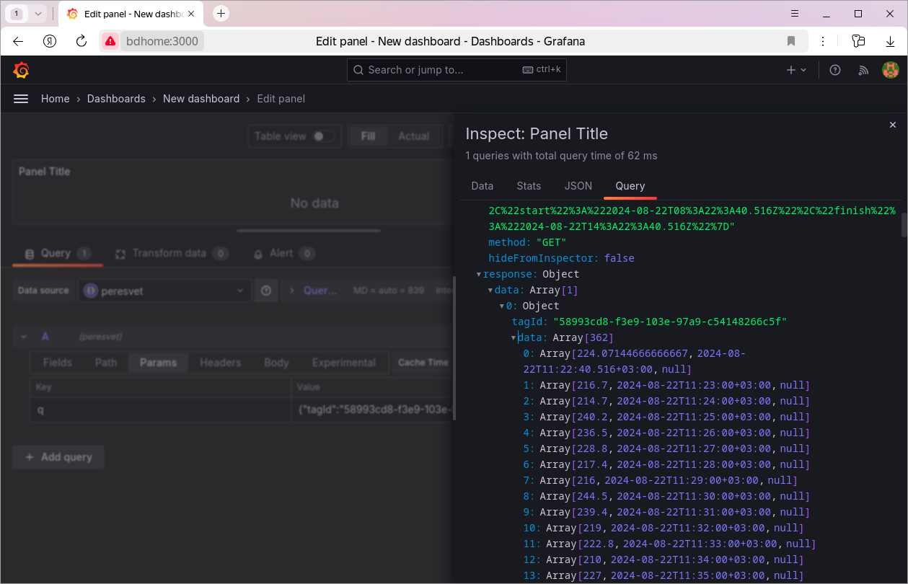
Объясните Grafana, где в ответе время, а где значение. Платформа отдаёт каждую точку массивом
[x, y, q]: метка времени, значение, код качества. На вкладке Fields добавьте два поля с типом выражения JSONPath:Field
Type
$.data[0].data[*][0]Time
$.data[0].data[*][1]Number
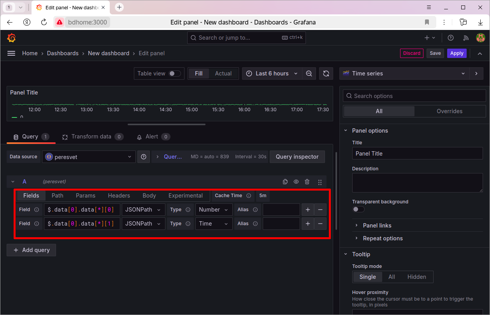
Примечание
Скриншот сделан в версии платформы, где точка имела вид
[y, x, q], поэтому индексы на нём переставлены. Ориентируйтесь на таблицу.Нажмите Apply. На панели появится тренд тега:
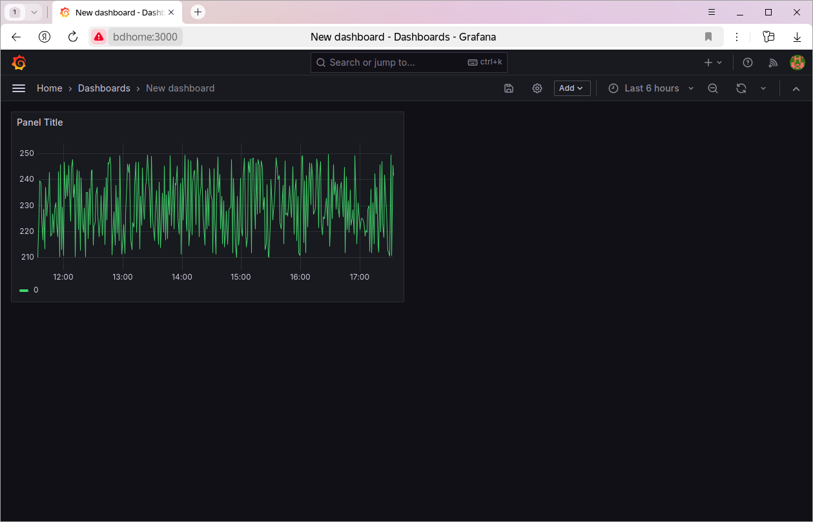
Период и частоту обновления можно менять в правом верхнем углу экрана: Grafana будет каждый раз запрашивать данные за новый период.
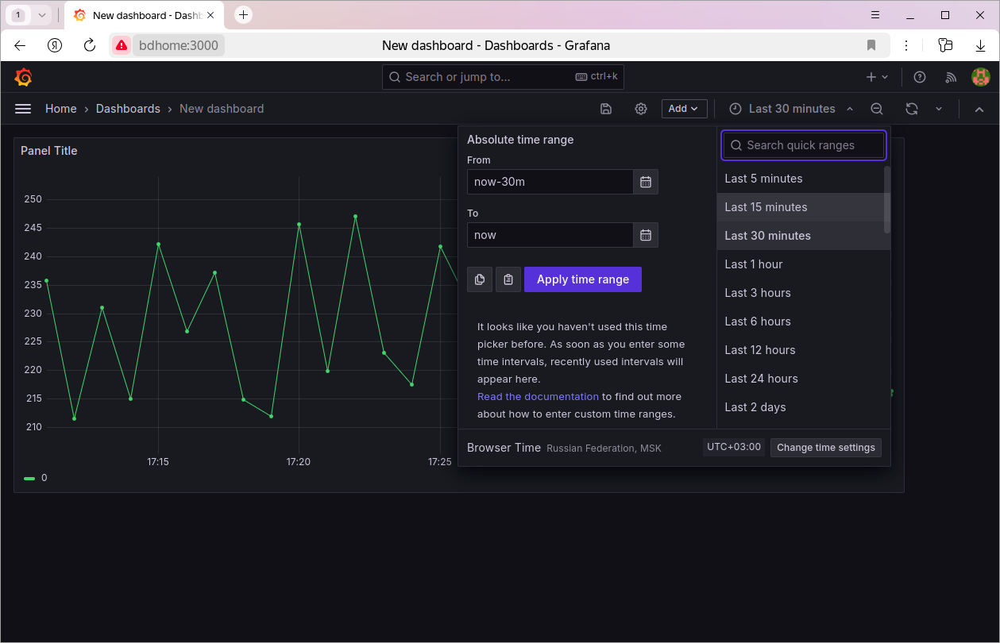